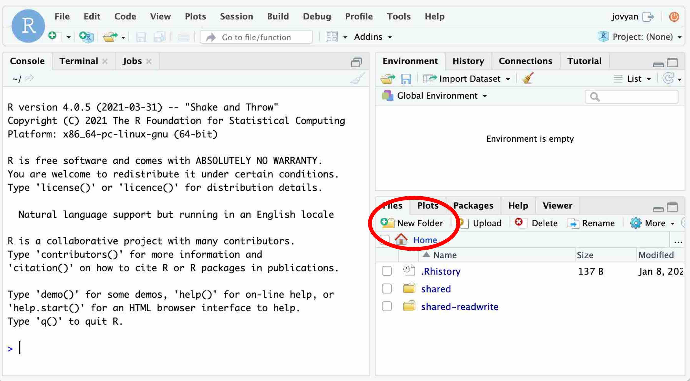
1 Setting Up R & RStudio
When you use our computer lab (SS561), you don’t need to worry about setting up R and RStudio as they are preinstalled on lab computers (Section 1.1).
When you use your own computer, you have two choices. First, you may use RStudio online from your UofT account of JupyterHub (Section 1.2). As long as you have an Internet connection, you can use RStudio from JupyterHub. In this option, you can be free from all the troubles of installing and updating R and RStudio on your computer.
Second, you may also download and install R and RStudio on your computer (Section 1.3).
Which option you use is up to you. If there is any issue in installing R and RStudio on your computer, you may use RStudio from JupyterHub (Section 1.2).
At the end of this chapter (Section 1.4), I will also explain R packages.
1.1 In-Class Lab Session at SS561
In our computer lab (SS561), both RStudio and R are preinstalled on all lab computers. During the class time, you can simply login to a lab computer using your utorid and open RStudio.
Make sure you open only RStudio. When you use RStudio, you don’t need to open R because opening RStudio quietly starts R behind its GUI.
1.2 Use RStudio from JupyterHub
As a UofT student, you have an access to JupyterHub. While you can download and install R and RStudio on your computer, you may also use RStudio online from JupyterHub. In this option, you can avoid all the troubles in installing R and RStudio. Especially if you encounter any issues in installing R and RStudio on your computer, this will be a viable alternative.
In this section, I explain how to use RStudio online through JupyterHub.
To access RStudio from JupyterHub, go to https://datatools.utoronto.ca/ and choose RStudio.

Click “Log On” and login using your utorid.
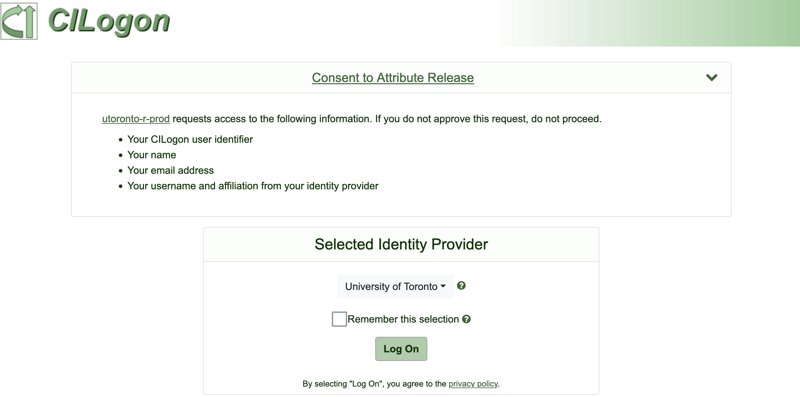
Then, RStudio Server will open on your browser.
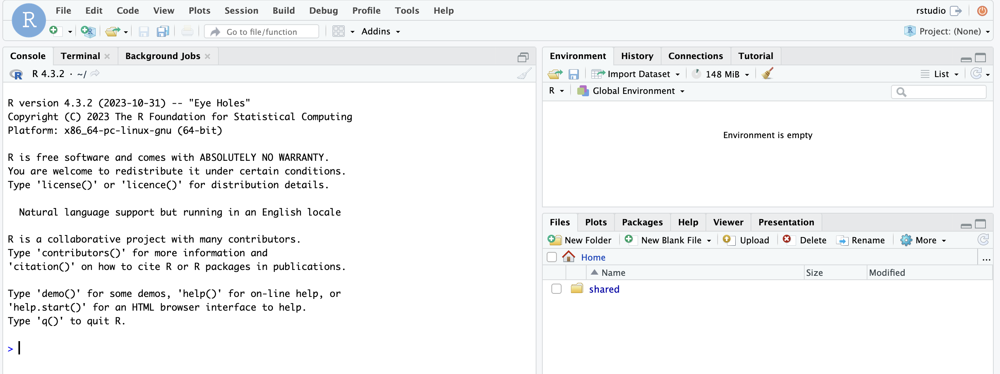
Now you can use RStudio online.
1.2.1 Prepare for POL232 on JupyterHub
First, I suggest you create a folder for POL232.
Click “New Folder” in the lower right pane.
Type in a name of the folder. Here I use “POL232.”
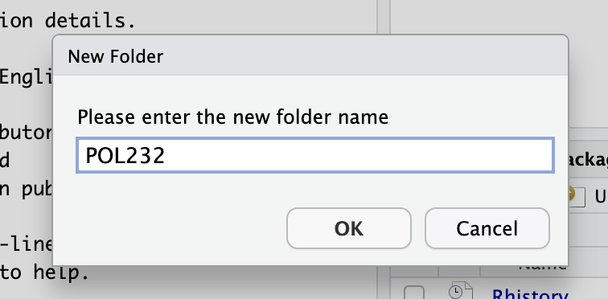
Then, the new folder appears in the lower right pane.
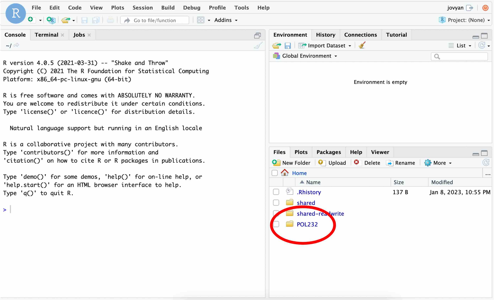
As we use the datasets in POL232.RData, we first need to upload this file to RStudio on JupyterHub. If you haven’t downloaded it yet, go to the class Quercus site and download POL232.RData.
Then, let’s upload POL232.RData to RStudio on JupyterHub.
Click the “Upload” icon.

Then, the following pop-up window appears. You first need to choose the target directory, which is a folder to which you upload POL232.RData.
Click “Browse”…
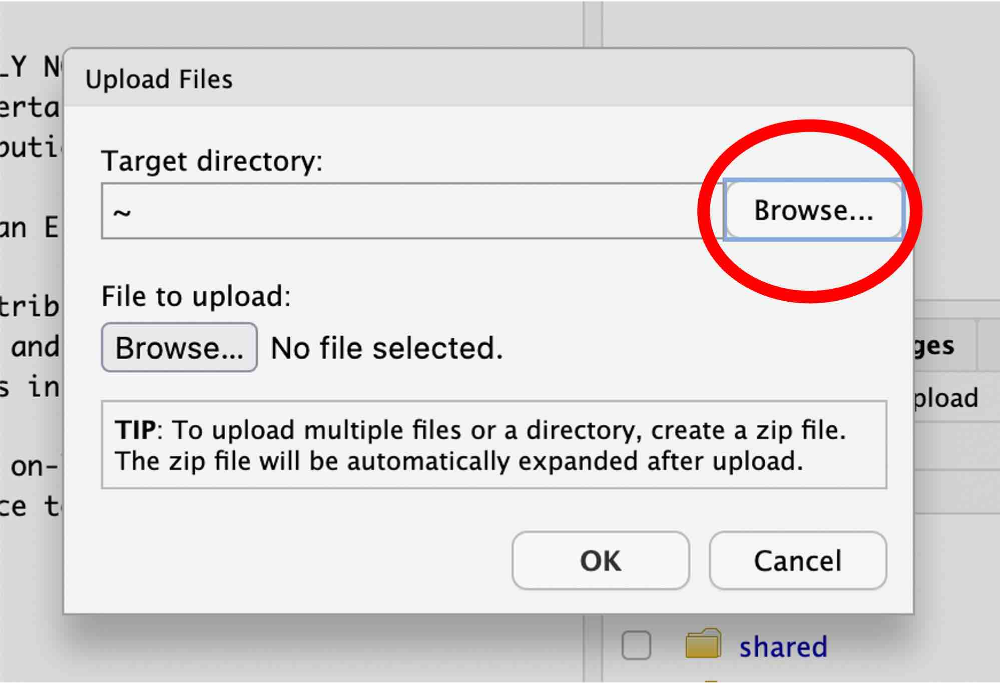
and choose the folder you just created. Here I choose the “POL232” folder.
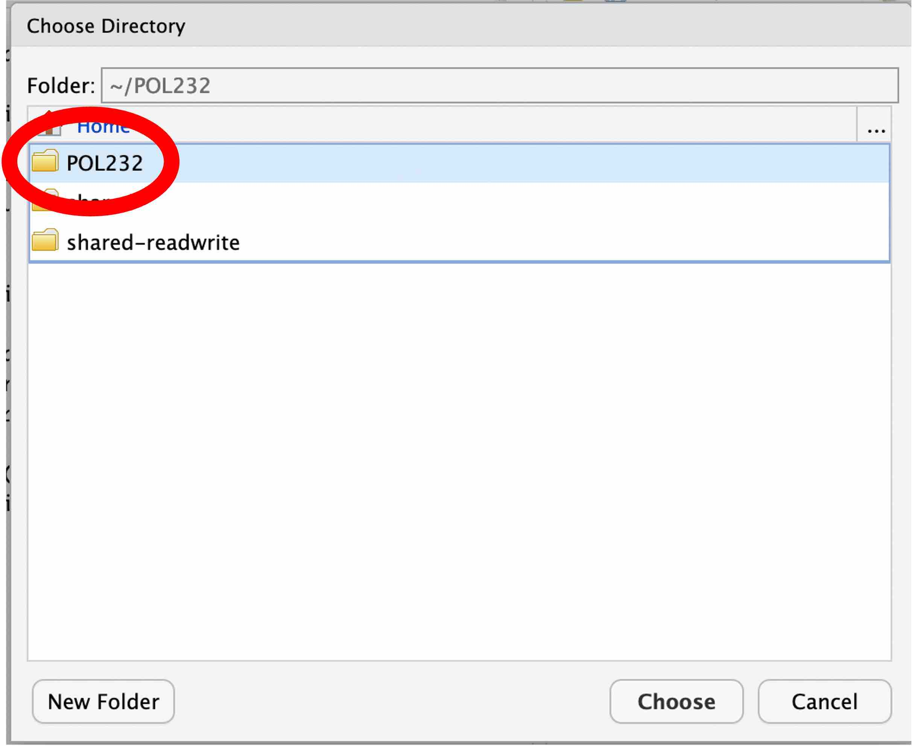
Then, select POL232.RData on your local drive to upload.
Click “Browse”…
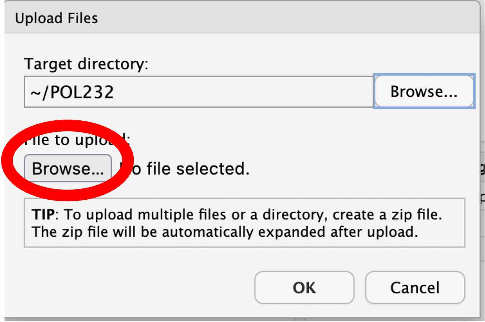
Locate POL232.RData on your local drive and select it. Note that the location of POL232.RData on your local drive is different from mine shown below.
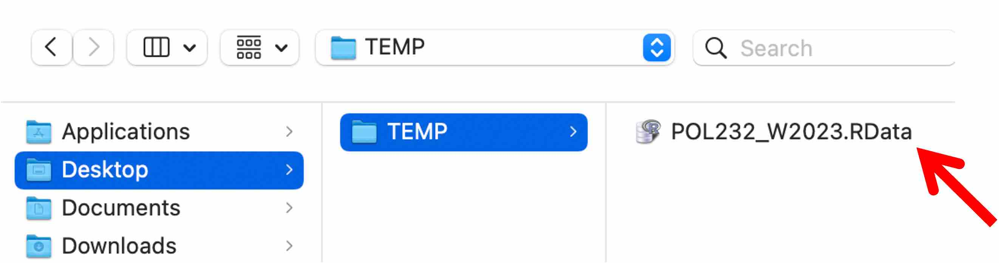
Hit “OK” to upload.
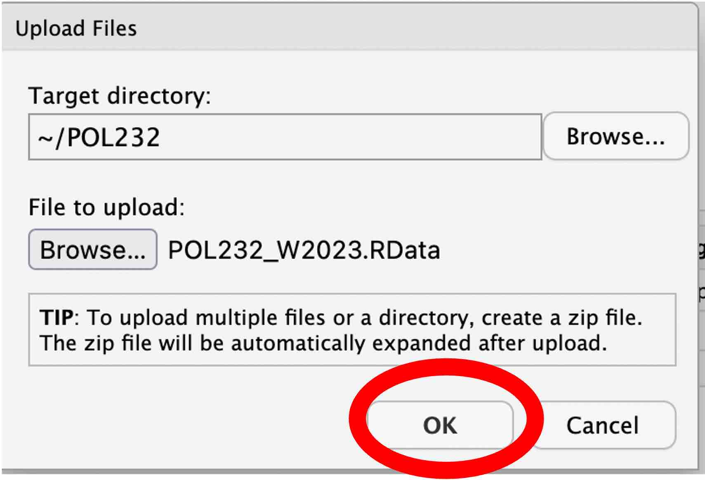
Then, POL232.RData appears in the folder you created in the lower right pane (the “POL232” folder in my case shown below).
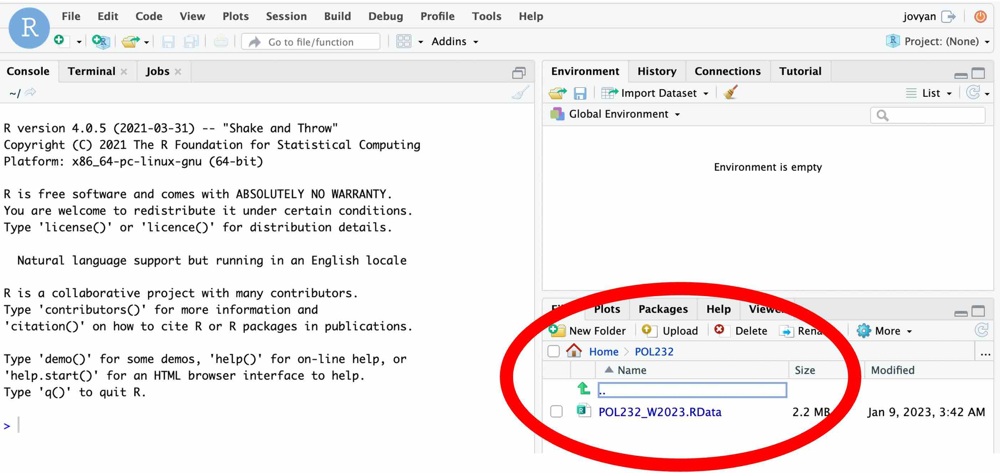
You can upload other files, if necessary, to RStudio on JupyterHub in the same way.
For example, to complete Section 2.2, you may want to upload POL232_R_Lab1_Example1.R.
Click these files in your folder in the lower right pane to open them. Below I opened POL232_R_Lab1_Example1.R that I have uploaded.
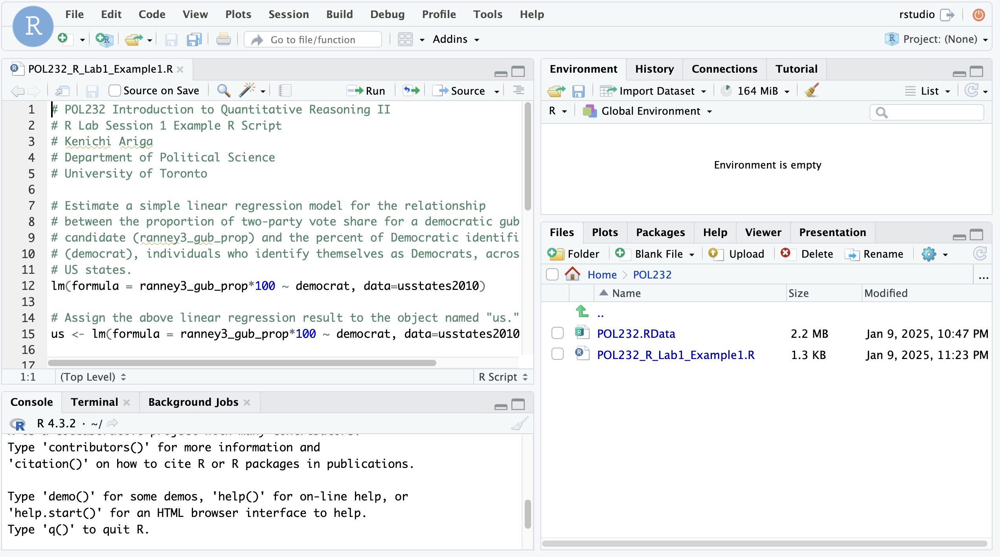
Then, you can use RStudio online from your browser, as you do in RStudio Desktop on lab computers.
1.2.2 Save Output Online
You can save what you create in RStudio on JupyterHub online in the folder you just created. In the example shown below, I save a scatterplot produced by the functions in POL232_R_Lab1_Example1.R (see Section 2.2.1).
To save the scatterplot, first choose “Export” on the Plots tab in the lower right pane and choose “Save as Image”.
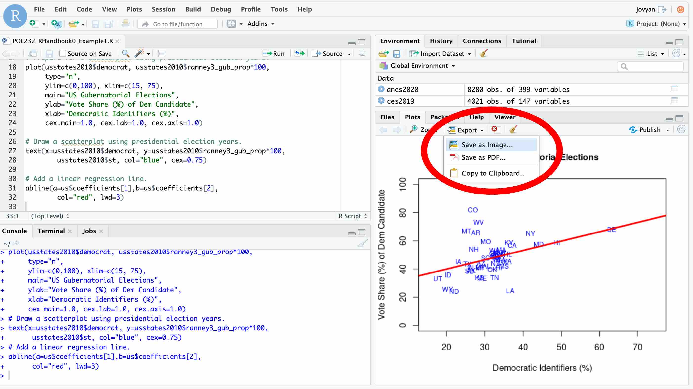
Then, choose the folder to which you will save the plot and specify a name of the plot.
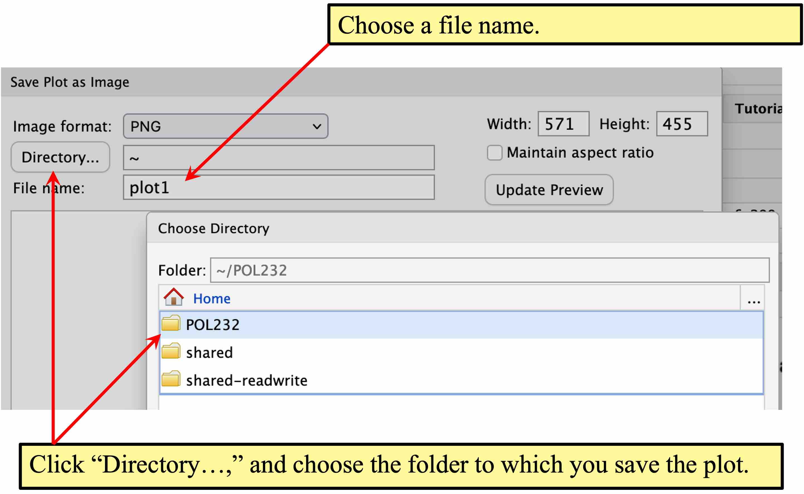
Click the “Files” tab in the lower right pane, then you can see that the plot you have saved appears there.
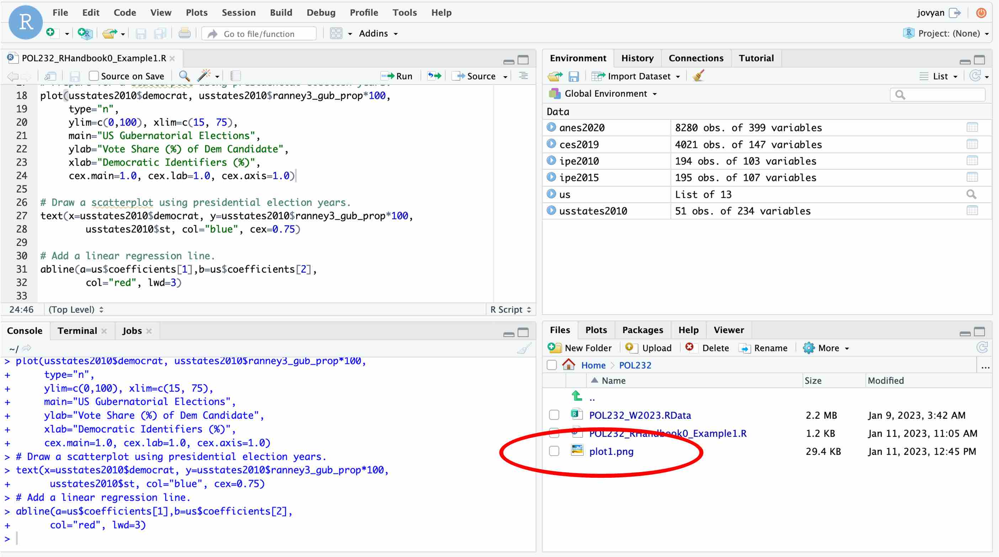
These files saved in your folder is saved in your cloud account for JupyterHub. They will stay there after you log out, and you can use them when you come back to JupyterHub.
1.2.3 Download Output
You can also download the files you saved online in RStudio on JupyterHub to your computer.
Check the file you want to download, and click “More.” Then, choose “Export” from the pull-down menu.
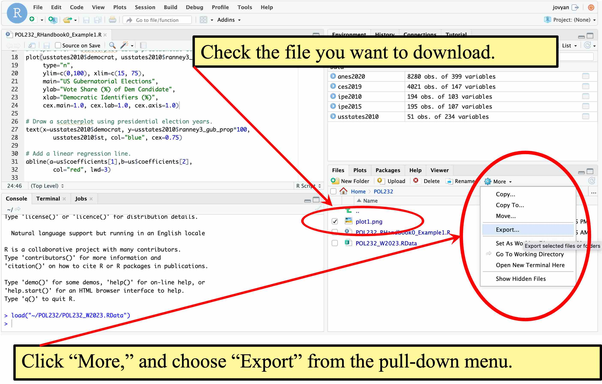
In the pop-up window, you may change a file name, if you want. Click “Download” to save the file on your computer locally.
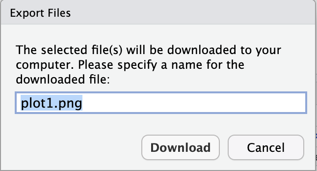
In R lab sessions during the class time or tutorial sessions, you will be required to upload the R script or some other files that you create during the sessions to the class Querus site. For this purpose, you first need to download these files to your local computer, and then, you will upload these files to Quercus from the local computer.
1.3 Download and Install R & RStudio
You may also download and install R and RStudio onto your computer. While you will open RStudio only, you need to install both R and RStudio on your computer. This is because RStudio is a GUI for R. When we open RStudio, it also quietly opens R behind.
You can download R onto your own computer from the CRAN (Comprehensive R Archive Network) mirror site closest to your place. You may choose one of the mirror sites listed under Canada.
1.3.1 R for a Windows user
- Click “Download R for Windows.”
- Choose “base” (or “install R for the first time”) .
- Click “Download R 4.4.2 for Windows” (“4.4.2” here refers to the version number. If the version on this site is newer — the version number is greater than 4.4.2 — then it is the latest version so download that latest version instead).
- Install R onto your computer.
1.3.2 R and XQuartz for a Mac user
- Click “Download R for macOS.”
- Download an appropriate release of R for your Mac. In particular, there are different releases for Apple silicon (M1,M2,…) Macs and older Intel Macs.
- Install R onto your computer.
- Make sure you also download and install XQuartz in order to use graphic functions of R on your Mac computer.
1.3.3 RStudio
Download and install RStudio Desktop from the RStudio’s website. Note that there is also a commercial license of R Studio Desktop Pro, but a free Open Source Edition will suffice our purpose. Choose installers appropriate for your operating system (OS).
1.3.4 Update
R and RStudio are frequently updated. You don’t need to update them during the current semester, but in your future use, it is recommended that you update the versions of R and RStudio occasionally.
1.4 R Packages
A package is a collection of user-written R functions, which you may download and install into your R library (i.e., onto your computer). There are thousands of packages available. You can see the currently available packages in this list.
You can see which packages were already downloaded in your R library in the Packages tab in the lower right pane of RStudio.
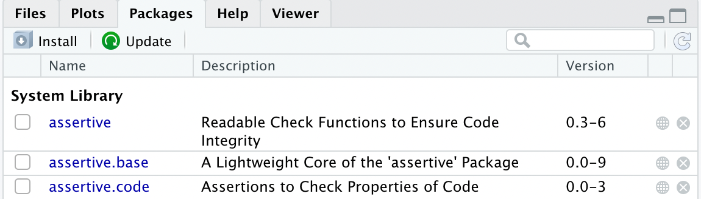
You may also use the library() function without an argument. If you run this function in RStudio, the R packages available tab will appear in the upper left pane.
library()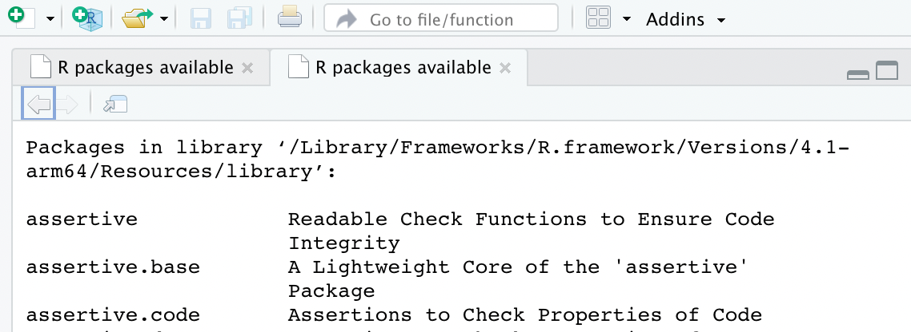
If this is the first time you use R, what you see here is the list of default R packages which came together with the installation of R. If we want to use R packages not included in this default list, we first need to download and install them on our computer.
1.4.1 Install Package: install.packages()
In POL232, we are going to use a few packages included in tidyverse, a popular collection of multiple R packages. If you download and install tidyverse, multiple packages included therein will be installed on your computer. In particular, we will often use dplyr and ggplot2 from the tidyverse family of packages in this course.
To install a package, you can use the install.packages() function.
install.packages("tidyverse")Or you may choose Install Packages… from the Tools menu.
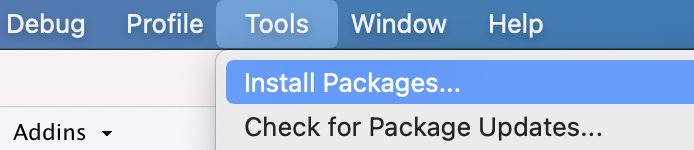
Then, type in the name of a package you want in the pop up window, and hit Install.
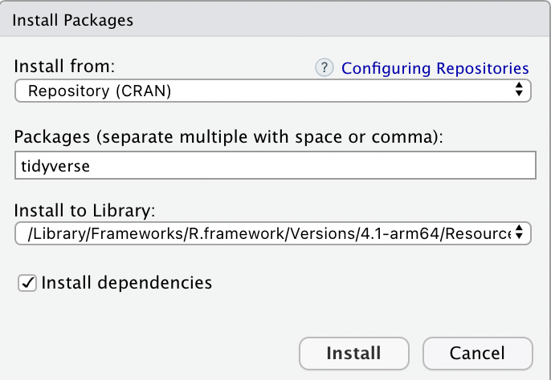
Another way to launch the above pop up window is to hit the Install icon (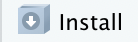) on the Packages tab at the lower right pane of RStudio.
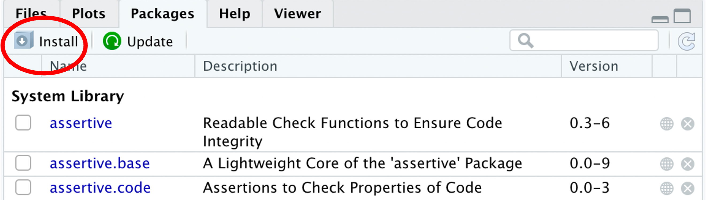
1.4.2 Load Package to Current R Session: library()
To use an R package you installed on your computer, you need to first load this package to your current R session using the library() function. For example, the following function loads all packages in tidyverse.
library(tidyverse)We can now use the functions included in the family of tidyverse packages, including dplyr and ggplot2. These functions are accessible during your current R session.
If you quit R and restart an R session, you need to load tidyverse again by the library() function.
Note that you don’t need to download and install the package you need every time you want to use it — once you have downloaded and installed it, it stays in your computer. You just need to load it into your current R session by the library() function, every time you start R.